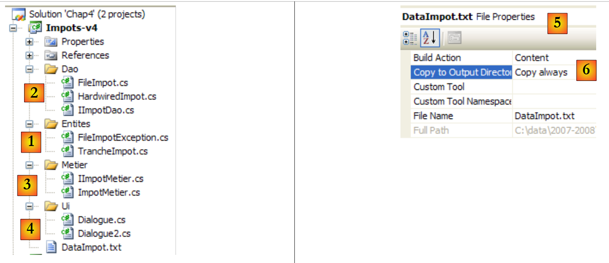
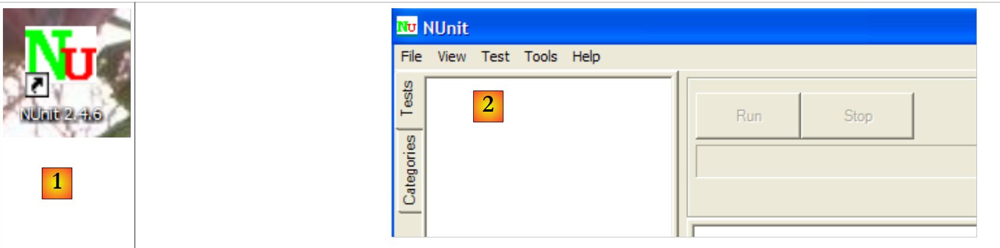
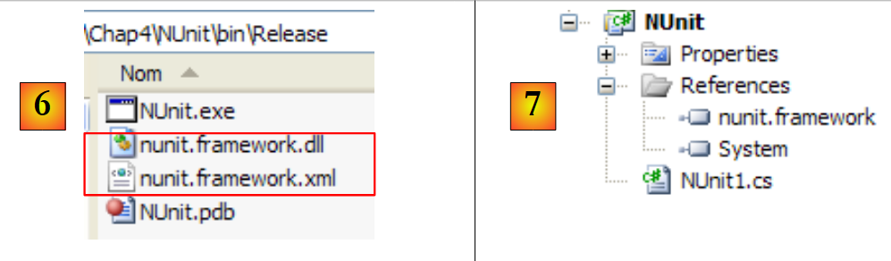
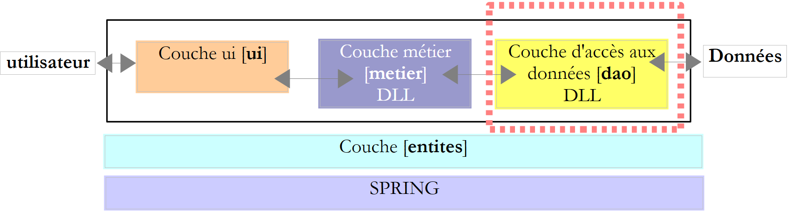
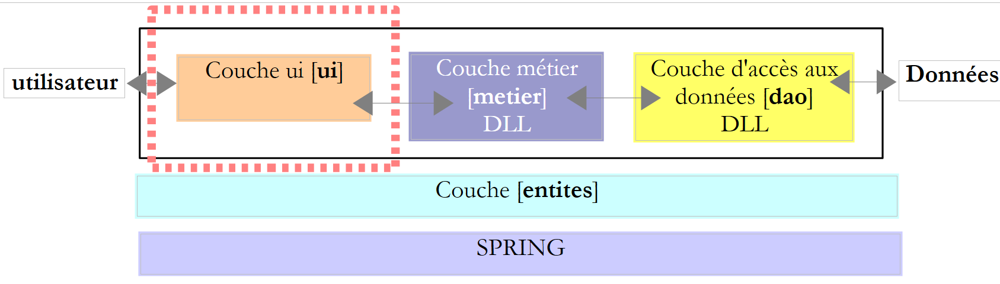
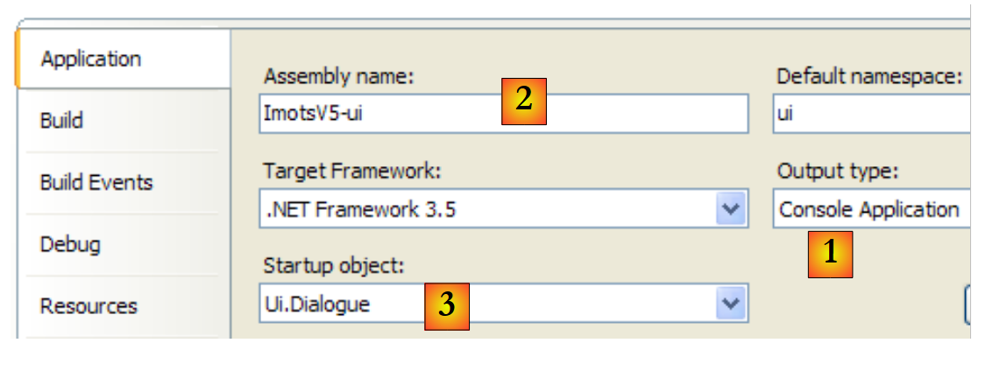
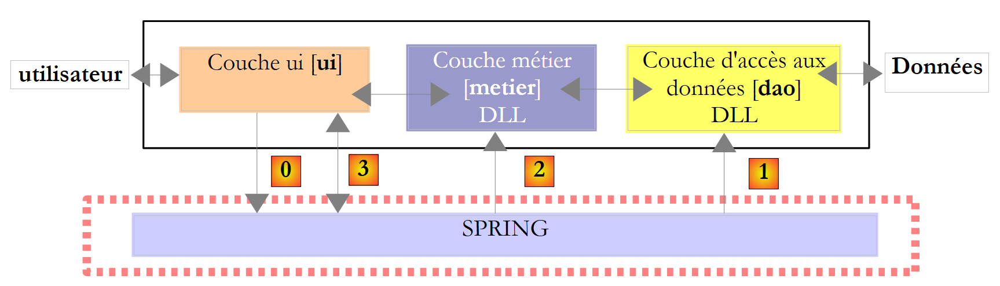

6. Arquitecturas de tres capas
6.1. Introducción
Volvamos al último version de la aplicación de cálculo de impuestos:
using System;
namespace Chap3 {
class Program {
static void Main() {
// calculadora fiscal interactiva
// el usuario escribe tres datos en el teclado: salario nbEnfants casado
// el programa muestra el Impuesto a pagar
...
// creación de un objeto IImpot
IImpot impot = null;
try {
// creación de un objeto IImpot
impot = new FileImpot("DataImpotInvalide.txt");
} catch (FileImpotException e) {
// visualización de errores
...
// parada del programa
Environment.Exit(1);
}
// bucle infinito
while (true) {
// se solicitan los parámetros de cálculo de impuestos
Console.Write("Paramètres du calcul de l'Impot au format : Marié (o/n) NbEnfants Salaire ou rien pour arrêter :");
string paramètres = Console.ReadLine().Trim();
...
// los parámetros son correctos - se calcula el impuesto
Console.WriteLine("Impot=" + impot.calculer(marié == "o", nbEnfants, salaire) + " euros");
// siguiente contribuyente
}//mientras que
}
}
}
La solución anterior incluye procesos clásicos de programación:
- la recuperación de datos almacenados en archivos, bases de datos, etc., líneas 12-21
- el diálogo con el usuario, líneas 26 (entradas) y 29 (visualizaciones)
- el uso de un algoritmo específico del negocio, línea 29
La práctica ha demostrado que aislar estos diferentes procesos en clases separadas mejora la mantenibilidad de las aplicaciones. La arquitectura de una aplicación estructurada de este modo es la siguiente:
 |
A esta arquitectura se la denomina «arquitectura de tres capas», traducción del inglés «three-tier architecture». El término «tres capas» suele referirse a una arquitectura en la que cada capa se encuentra en una máquina diferente. Cuando las capas se encuentran en una misma máquina, la arquitectura se convierte en una arquitectura de «tres niveles».
- La capa [metier] es la que contiene las reglas de negocio de la aplicación. Para nuestra aplicación de cálculo de impuestos, son las reglas que permiten calcular el impuesto de un contribuyente. Esta capa necesita datos para funcionar:
- los tramos impositivos, datos que cambian cada año
- el número de hijos, el estado civil y el salario anual del contribuyente
En el esquema anterior, los datos pueden proceder de dos lugares:
- la capa de acceso a los datos o [dao] (DAO = Data Access Object) para los datos ya registrados en archivos o bases de datos. Este podría ser el caso aquí de los tramos impositivos, tal y como se hizo en el anterior version de la aplicación.
- la capa de interfaz con el usuario o [ui] (UI = Interfaz de usuario) para los datos introducidos por el usuario o mostrados al usuario. Este podría ser el caso aquí del número de hijos, del estado civil y del salario anual del contribuyente
- En general, la capa [dao] se encarga del acceso a los datos persistentes (archivos, bases de datos) o no persistentes (red, sensores, etc.).
- La capa [ui], por su parte, se encarga de las interacciones con el usuario, si lo hay.
- Las tres capas son independientes gracias al uso de interfaces.
Vamos a retomar la aplicación [Impots], que ya hemos estudiado en varias ocasiones, para dotarla de una arquitectura de tres capas. Para ello, estudiaremos las capas [ui, metier, dao] una tras otra, comenzando por la capa [dao], que se encarga de los datos persistentes.
Antes, debemos definir las interfaces de las diferentes capas de la aplicación [Impots].
6.2. Las interfaces de la aplicación [Impots]
Recordemos que una interfaz define un conjunto de firmas de métodos. Las clases que implementan la interfaz dan contenido a estos métodos.
Volvamos a la arquitectura de tres capas de nuestra aplicación:
 |
En este tipo de arquitectura, suele ser el usuario quien toma la iniciativa. Realiza una solicitud en [1] y recibe una respuesta en [8]. A esto se le denomina ciclo solicitud-respuesta. Tomemos el ejemplo del cálculo de los impuestos de un contribuyente. Este requerirá varios pasos:
- la capa [ui] deberá solicitar al usuario el número de hijos que tiene, su estado civil y su salario anual. Se trata de la operación [1] mencionada anteriormente.
- Una vez hecho esto, la capa [ui] solicitará a la capa de negocio que realice el cálculo del impuesto. Para ello, le transmitirá los datos que ha recibido del usuario. Se trata de la operación [2].
- La capa [metier] necesita cierta información para llevar a cabo su trabajo: los tramos impositivos. Solicitará esta información a la capa [dao] mediante la ruta [3, 4, 5, 6]. [3] es la solicitud inicial y [6] la respuesta a dicha solicitud.
- Al disponer de todos los datos que necesitaba, la capa [metier] calcula el impuesto.
- La capa [metier] puede ahora responder a la solicitud de la capa [ui] realizada en (b). Esta es la ruta [7].
- La capa [ui] formateará estos resultados y los presentará al usuario. Esta es la ruta [8].
- Podríamos imaginar que el usuario realiza simulaciones de impuestos y desea guardarlas. Para ello, utilizará la ruta [1-8].
En esta descripción se observa que una capa utiliza los recursos de la capa situada a su derecha, nunca los de la que está a su izquierda. Consideremos dos capas contiguas:
 |
La capa [A] realiza solicitudes a la capa [B]. En los casos más sencillos, una capa se implementa mediante una única clase. Una aplicación evoluciona con el tiempo. Así, la capa [B] puede tener diferentes clases de implementación [B1, B2, ...]. Si la capa [B] es la capa [dao], esta puede tener una primera implementación [B1] que busca datos en un archivo. Unos años más tarde, es posible que se desee almacenar los datos en una base de datos. Entonces se creará una segunda clase de implementación [B2]. Si en la aplicación inicial la capa [A] trabajaba directamente con la clase [B1], nos vemos obligados a reescribir parcialmente el código de la capa [A]. Supongamos, por ejemplo, que en la capa [A] se ha escrito algo como lo siguiente:
- línea 1: se crea una instancia de la clase [B1]
- línea 3: se solicitan datos a esta instancia
Si suponemos que la nueva clase de implementación [B2] utiliza métodos con la misma firma que los de la clase [B1], habrá que cambiar todos los [B1] por [B2]. Este es un caso muy favorable y bastante improbable si no se ha prestado atención a estas firmas de métodos. En la práctica, es frecuente que las clases [B1] y [B2] no tengan las mismas firmas de métodos y que, por lo tanto, una buena parte de la capa [A] deba reescribirse por completo.
Se puede mejorar la situación si se introduce una interfaz entre las capas [A] y [B]. Esto significa que se fijan en una interfaz las firmas de los métodos que la capa [B] presenta a la capa [A]. El esquema anterior queda entonces así:
 |
La capa [A] ya no se dirige directamente a la capa [B], sino a su interfaz [IB]. Así, en el código de la capa [A], la clase de implementación [Bi] de la capa [B] solo aparece una vez, en el momento de la implementación de la interfaz [IB]. Una vez hecho esto, es la interfaz [IB] y no su clase de implementación la que se utiliza en el código. El código anterior queda así:
- línea 1: se crea una instancia [ib] que implementa la interfaz [IB] mediante la instanciación de la clase [B1]
- línea 3: se solicitan datos a la instancia [ib]
Ahora bien, si sustituimos la implementación [B1] de la capa [B] por una implementación [B2], y ambas implementaciones respetan la misma interfaz [IB], entonces solo se debe modificar la línea 1 de la capa [A] y ninguna otra. Se trata de una gran ventaja que, por sí sola, justifica el uso sistemático de interfaces entre dos capas.
Podemos ir aún más lejos y hacer que la capa [A] sea totalmente independiente de la capa [B]. En el código anterior, la línea 1 plantea un problema porque hace referencia directa a la clase [B1]. Lo ideal sería que la capa [A] pudiera disponer de una implementación de la interfaz [IB] sin tener que nombrar ninguna clase. Esto sería coherente con nuestro esquema anterior. Se observa que la capa [A] se dirige a la interfaz [IB] y no se entiende por qué necesitaría conocer el nombre de la clase que implementa dicha interfaz. Este detalle no es útil para la capa [A].
El framework Spring (http://www.springframework.org) permite obtener este resultado. La arquitectura anterior evoluciona de la siguiente manera:
 |
La capa transversal [Spring] permitirá a una capa obtener, mediante configuración, una referencia a la capa situada a su derecha sin necesidad de conocer el nombre de la clase de implementación de la capa. Este nombre estará en los archivos de configuración y no en el código C#. El código C# de la capa [A] adopta entonces la siguiente forma:
- línea 1: una instancia [ib] que implementa la interfaz [IB] de la capa [B]. Esta instancia es creada por Spring a partir de la información encontrada en un archivo de configuración. Spring se encargará de crear:
- la instancia [b] que implementa la capa [B]
- la instancia [a] que implementa la capa [A]. Esta instancia se inicializará. El campo [ib] anterior recibirá como valor la referencia [b] del objeto que implementa la capa [B]
- línea 3: se solicitan datos a la instancia [ib]
Ahora vemos que la clase de implementación [B1] de la capa B no aparece en ninguna parte del código de la capa [A]. Cuando la implementación [B1] sea sustituida por una nueva implementación [B2], no cambiará nada en el código de la clase [A]. Simplemente se cambiarán los archivos de configuración de Spring para instanciar [B2] en lugar de [B1].
La combinación de Spring y las interfaces C# supone una mejora decisiva para el mantenimiento de las aplicaciones, al hacer que sus capas sean independientes entre sí. Esta es la solución que utilizaremos para una nueva version de la aplicación [Impots].
Volvamos a la arquitectura de tres capas de nuestra aplicación:
 |
En los casos sencillos, podemos partir de la capa [metier] para descubrir las interfaces de la aplicación. Para funcionar, necesita datos:
- ya disponibles en archivos, bases de datos o a través de la red. Estos son proporcionados por la capa [dao].
- aún no disponibles. En ese caso, los proporciona la capa [ui], que los obtiene del usuario de la aplicación.
¿Qué interfaz debe ofrecer la capa [dao] a la capa [metier]? ¿Cuáles son las interacciones posibles entre estas dos capas? La capa [dao] debe proporcionar los siguientes datos a la capa [metier]:
- los tramos impositivos
En nuestra aplicación, la capa [dao] utiliza datos existentes, pero no crea ninguno nuevo. Una definición de la interfaz de la capa [dao] podría ser la siguiente:
using Entites;
namespace Dao {
public interface IImpotDao {
// tramos impositivos
TrancheImpot[] TranchesImpot{get;}
}
}
- línea 3: la capa [dao] se colocará en el espacio de nombres [Dao]
- línea 6: la interfaz IImpotDao define la propiedad TranchesImpot que proporcionará los tramos impositivos a la capa [métier].
- línea 1: importa el espacio de nombres en el que se define la estructura TrancheImpot:
namespace Entites {
// una banda impositiva
public struct TrancheImpot {
public decimal Limite { get; set; }
public decimal CoeffR { get; set; }
public decimal CoeffN { get; set; }
}
}
Volvamos a la arquitectura de tres capas de nuestra aplicación:
 |
¿Qué interfaz debe presentar la capa [metier] a la capa [ui]? Recordemos las interacciones entre estas dos capas:
- la capa [ui] solicita al usuario el número de hijos, su estado civil y su salario anual. Se trata de la operación [1] mencionada anteriormente.
- Una vez hecho esto, la capa [ui] solicitará a la capa de negocio que realice el cálculo de los escaños. Para ello, le transmitirá los datos que ha recibido del usuario. Se trata de la operación [2].
Una definición de la interfaz de la capa [metier] podría ser la siguiente:
namespace Metier {
interface IImpotMetier {
int CalculerImpot(bool marié, int nbEnfants, int salaire);
}
}
- línea 1: colocaremos todo lo relacionado con la capa [metier] en el espacio de nombres [Metier].
- línea 2: la interfaz IImpotMetier solo define un método: el que permite calcular el impuesto de un contribuyente a partir de su estado civil, el número de hijos y su salario anual.
Analizamos una primera implementación de esta arquitectura por capas.
6.3. Aplicación de ejemplo - version 4
6.3.1. El proyecto de Visual Studio
El proyecto de Visual Studio será el siguiente:
 |
- [1]: la carpeta [Entites] contiene los objetos transversales a las capas [ui, metier, dao]: la estructura TrancheImpot, la excepción FileImpotException.
- [2]: la carpeta [Dao] contiene las clases e interfaces de la capa [dao]. Utilizaremos dos implementaciones de la interfaz IImpotDao: la clase HardwiredImpot estudiada en el apartado 4.10 y FileImpot estudiada en el apartado 5.8.
- [3]: la carpeta [Metier] contiene las clases e interfaces de la capa [metier]
- [4]: la carpeta [Ui] contiene las clases de la capa [ui]
- [5]: el archivo [DataImpot.txt] contiene los tramos impositivos utilizados por la implementación FileImpot de la capa [dao]. [6] está configurado para copiarse automáticamente en la carpeta de ejecución del proyecto.
6.3.2. Las entidades de la aplicación
Volvamos a la arquitectura de tres capas de nuestra aplicación:
 |
Denominamos «entidades» a las clases transversales a las capas. Este es el caso, en general, de las clases y estructuras que encapsulan datos de la capa [dao]. Estas entidades suelen remontarse hasta la capa [ui].
Las entidades de la aplicación son las siguientes:
La estructura TrancheImpot
namespace Entites {
// una banda impositiva
public struct TrancheImpot {
public decimal Limite { get; set; }
public decimal CoeffR { get; set; }
public decimal CoeffN { get; set; }
}
}
La excepción FileImpotException
using System;
namespace Entites {
public class FileImpotException : Exception {
// códigos de error
[Flags]
public enum CodeErreurs { Acces = 1, Ligne = 2, Champ1 = 4, Champ2 = 8, Champ3 = 16 };
// código de error
public CodeErreurs Code { get; set; }
// fabricantes
public FileImpotException() {
}
public FileImpotException(string message)
: base(message) {
}
public FileImpotException(string message, Exception e)
: base(message, e) {
}
}
}
Nota: la clase FileImpotException solo es útil si la capa [dao] está implementada por la clase FileImpot.
6.3.3. La capa [dao]
 |
Recordemos la interfaz de la capa [dao]:
using Entites;
namespace Dao {
public interface IImpotDao {
// tramos impositivos
TrancheImpot[] TranchesImpot{get;}
}
}
Implementaremos esta interfaz de dos maneras diferentes.
En primer lugar, con la clase HardwiredImpot estudiada en el apartado 4.10:
using System;
using Entites;
namespace Dao {
public class HardwiredImpot : IImpotDao {
// tablas de datos necesarios para calcular el impuesto
decimal[] limites = { 4962M, 8382M, 14753M, 23888M, 38868M, 47932M, 0M };
decimal[] coeffR = { 0M, 0.068M, 0.191M, 0.283M, 0.374M, 0.426M, 0.481M };
decimal[] coeffN = { 0M, 291.09M, 1322.92M, 2668.39M, 4846.98M, 6883.66M, 9505.54M };
// tramos impositivos
public TrancheImpot[] TranchesImpot { get; private set; }
// fabricante
public HardwiredImpot() {
// creación de una tabla de tramos impositivos
TranchesImpot = new TrancheImpot[limites.Length];
// llenado
for (int i = 0; i < TranchesImpot.Length; i++) {
TranchesImpot[i] = new TrancheImpot { Limite = limites[i], CoeffR = coeffR[i], CoeffN = coeffN[i] };
}
}
}// clase
}// espacio de nombres
- línea 5: la clase HardwiredImpot implementa la interfaz IImpotDao
- línea 12: implementación de la propiedad TranchesImpot de la interfaz IImpotDao. Esta propiedad es una propiedad automática. Implementa el método get de la propiedad TranchesImpot de la interfaz IImpotDao. Además, se ha declarado un método set privado, es decir, interno a la clase, para que el constructor de las líneas 15-22 pueda inicializar la matriz de tramos impositivos.
La interfaz IImpotDao también será implementada por la clase FileImpot estudiada en el apartado 5.8:
using System;
using System.Collections.Generic;
using System.IO;
using System.Text.RegularExpressions;
using Entites;
namespace Dao {
class FileImpot : IImpotDao {
// archivo de datos
public string FileName { get; set; }
// tramos impositivos
public TrancheImpot[] TranchesImpot { get; private set; }
// fabricante
public FileImpot(string fileName) {
// guardamos el nombre del archivo
FileName = fileName;
// datos
List<TrancheImpot> listTranchesImpot = new List<TrancheImpot>();
int numLigne = 1;
// excepción
FileImpotException fe = null;
// leer el contenido del fichero fileName, línea por línea
Regex pattern = new Regex(@"s*:\s*");
// inicialmente ningún error
FileImpotException.CodeErreurs code = 0;
try {
using (StreamReader input = new StreamReader(FileName)) {
while (!input.EndOfStream && code == 0) {
// línea actual
string ligne = input.ReadLine().Trim();
// ignorar las líneas vacías
if (ligne == "")
continue;
// línea desglosada en tres campos separados por :
string[] champsLigne = pattern.Split(ligne);
// ¿tenemos 3 campos?
if (champsLigne.Length != 3) {
code = FileImpotException.CodeErreurs.Ligne;
}
// 3 conversiones de campo
decimal limite = 0, coeffR = 0, coeffN = 0;
if (code == 0) {
if (!Decimal.TryParse(champsLigne[0], out limite))
code = FileImpotException.CodeErreurs.Champ1;
if (!Decimal.TryParse(champsLigne[1], out coeffR))
code |= FileImpotException.CodeErreurs.Champ2;
if (!Decimal.TryParse(champsLigne[2], out coeffN))
code |= FileImpotException.CodeErreurs.Champ3;
;
}
// ¿Error?
if (code != 0) {
// observamos el error
fe = new FileImpotException(String.Format("Ligne n° {0} incorrecte", numLigne)) { Code = code };
} else {
// se memoriza el nuevo tramo impositivo
listTranchesImpot.Add(new TrancheImpot() { Limite = limite, CoeffR = coeffR, CoeffN = coeffN });
// línea siguiente
numLigne++;
}
}
}
} catch (Exception e) {
// observamos el error
fe = new FileImpotException(String.Format("Erreur lors de la lecture du fichier {0}", FileName), e) { Code = FileImpotException.CodeErreurs.Acces };
}
// error del que informar?
if (fe != null) {
// lanzar la excepción
throw fe;
} else {
// devuelve la lista listImpot en la matriz tranchesImpot
TranchesImpot = listTranchesImpot.ToArray();
}
}
}
}
- Este código ya se ha analizado en el apartado 5.8.
- línea 14: el método TranchesImpot de la interfaz IImpotDao
- línea 76: inicialización de los tramos impositivos en el constructor de la clase, a partir del archivo cuyo nombre recibió el constructor en la línea 17.
6.3.4. La capa [metier]
 |
Recordemos la interfaz de esta capa:
namespace Metier {
public interface IImpotMetier {
int CalculerImpot(bool marié, int nbEnfants, int salaire);
}
}
La implementación ImpotMetier de esta interfaz es la siguiente:
using Entites;
using Dao;
namespace Metier {
public class ImpotMetier : IImpotMetier {
// capa [dao]
private IImpotDao Dao { get; set; }
// tramos impositivos
private TrancheImpot[] tranchesImpot;
// fabricante
public ImpotMetier(IImpotDao dao) {
// memorización
Dao = dao;
// tramos impositivos
tranchesImpot = dao.TranchesImpot;
}
// cálculo de impuestos
public int CalculerImpot(bool marié, int nbEnfants, int salaire) {
// cálculo del número de acciones
decimal nbParts;
if (marié)
nbParts = (decimal)nbEnfants / 2 + 2;
else
nbParts = (decimal)nbEnfants / 2 + 1;
if (nbEnfants >= 3)
nbParts += 0.5M;
// cálculo de la base imponible y de la cuota familiar
decimal revenu = 0.72M * salaire;
decimal QF = revenu / nbParts;
// cálculo de impuestos
tranchesImpot[tranchesImpot.Length - 1].Limite = QF + 1;
int i = 0;
while (QF > tranchesImpot[i].Limite)
i++;
// devolver resultado
return (int)(revenu * tranchesImpot[i].CoeffR - nbParts * tranchesImpot[i].CoeffN);
}//calcular
}//clase
}
- línea 5: la clase [Metier] implementa la interfaz [IImpotMetier].
- líneas 14-19: la capa [metier] debe colaborar con la capa [dao]. Por lo tanto, debe tener una referencia al objeto que implementa la interfaz IImpotDao. Por eso se pasa esta referencia como parámetro al constructor.
- línea 16: la referencia a la capa [dao] se almacena en el campo privado de la línea 8
- línea 18: a partir de esta referencia, el constructor solicita la tabla de tramos impositivos y almacena una referencia a ella en la propiedad privada de la línea 8.
- Líneas 22-41: implementación del método CalculerImpot de la interfaz IImpotMetier. Esta implementación utiliza la tabla de tramos impositivos inicializada por el constructor.
6.3.5. La capa [ui]
 |
Las clases de diálogo con el usuario de las versiones 2 y 3 eran muy similares. La de la version 2 era la siguiente:
using System;
namespace Chap2 {
public class Program {
static void Main() {
...
// creación de un objeto IImpot
IImpot impot = new HardwiredImpot();
// bucle infinito
while (true) {
...
}//mientras que
}
}
}
y la de version 3:
using System;
namespace Chap3 {
public class Program {
static void Main() {
...
// creación de un objeto IImpot
IImpot impot = null;
try {
// creación de un objeto IImpot
impot = new FileImpot("DataImpotInvalide.txt");
} catch (FileImpotException e) {
// visualización de errores
string msg = e.InnerException == null ? null : String.Format(", Exception d'origine : {0}", e.InnerException.Message);
Console.WriteLine("L'erreur suivante s'est produite : [Code={0},Message={1}{2}]", e.Code, e.Message, msg == null ? "" : msg);
// parada del programa
Environment.Exit(1);
}
// bucle infinito
while (true) {
...
}//mientras que
}
}
}
Lo único que cambia es la forma de instanciar el objeto de tipo IImpot que permite el cálculo del impuesto. Este objeto corresponde aquí a nuestra capa [métier].
Para una implementación [dao] con la clase HardwiredImpot, la clase de diálogo es la siguiente:
using System;
using Metier;
using Dao;
using Entites;
namespace Ui {
public class Dialogue2 {
static void Main() {
...
// crear las capas [metier et dao]
IImpotMetier metier = new ImpotMetier(new HardwiredImpot());
// bucle infinito
while (true) {
...
// los parámetros son correctos - se calcula el impuesto
Console.WriteLine("Impot=" + metier.CalculerImpot(marié == "o", nbEnfants, salaire) + " euros");
// siguiente contribuyente
}//mientras que
}
}
}
- línea 12: instanciación de las capas [dao] y [metier]. Recordemos que la capa [metier] necesita la capa [dao].
- línea 18: uso de la capa [metier] para calcular el impuesto
Para una implementación [dao] con la clase FileImpot, la clase de diálogo es la siguiente:
using System;
using Metier;
using Dao;
using Entites;
namespace Ui {
public class Dialogue {
static void Main() {
...
// crear las capas [metier et dao]
IImpotMetier metier = null;
try {
// crear capa [metier]
metier = new ImpotMetier(new FileImpot("DataImpot.txt"));
} catch (FileImpotException e) {
// visualización de errores
string msg = e.InnerException == null ? null : String.Format(", Exception d'origine : {0}", e.InnerException.Message);
Console.WriteLine("L'erreur suivante s'est produite : [Code={0},Message={1}{2}]", e.Code, e.Message, msg == null ? "" : msg);
// parada del programa
Environment.Exit(1);
}
// bucle infinito
while (true) {
...
// los parámetros son correctos - se calcula el impuesto
Console.WriteLine("Impot=" + metier.CalculerImpot(marié == "o", nbEnfants, salaire) + " euros");
// siguiente contribuyente
}//mientras que
}
}
}
- líneas 11-21: instanciación de las capas [dao] y [metier]. Dado que la instanciación de la capa [dao] puede lanzar una excepción, esta se gestiona
- línea 26: uso de la capa [metier] para calcular el impuesto, al igual que en la anterior version
6.3.6. Conclusión
La arquitectura por capas y el uso de interfaces han aportado cierta flexibilidad a nuestra aplicación. Esto se aprecia especialmente en la forma en que la capa [ui] instancia las capas [dao] y [métier]:
// crear las capas [metier et dao]
IImpotMetier metier = new ImpotMetier(new HardwiredImpot());
en un caso y:
// crear las capas [metier et dao]
IImpotMetier metier = null;
try {
// crear capa [metier]
metier = new ImpotMetier(new FileImpot("DataImpot.txt"));
} catch (FileImpotException e) {
// visualización de errores
string msg = e.InnerException == null ? null : String.Format(", Exception d'origine : {0}", e.InnerException.Message);
Console.WriteLine("L'erreur suivante s'est produite : [Code={0},Message={1}{2}]", e.Code, e.Message, msg == null ? "" : msg);
// parada del programa
Environment.Exit(1);
}
en la otra. Si se excluye la gestión de la excepción en el caso 2, la instanciación de las capas [dao] y [metier] es similar en ambas aplicaciones. Una vez instanciadas las capas [dao] y [metier], el código de la capa [ui] es idéntico en ambos casos. Esto se debe a que la capa [métier] se maneja a través de su interfaz IImpotMetier y no a través de la clase de implementación de esta. Modificar la capa [metier] o la capa [dao] de la aplicación sin cambiar sus interfaces siempre supondrá cambiar únicamente las líneas anteriores en la capa [ui].
Otro ejemplo de la flexibilidad que aporta esta arquitectura es el de la implementación de la capa [métier]:
using Entites;
using Dao;
namespace Metier {
public class ImpotMetier : IImpotMetier {
// capa [dao]
private IImpotDao Dao { get; set; }
// tramos impositivos
private TrancheImpot[] tranchesImpot;
// fabricante
public ImpotMetier(IImpotDao dao) {
// memorización
Dao = dao;
// tramos impositivos
tranchesImpot = dao.TranchesImpot;
}
// cálculo de impuestos
public int CalculerImpot(bool marié, int nbEnfants, int salaire) {
...
}//calcular
}//clase
}
En la línea 14, vemos que la capa [métier] se construye a partir de una referencia a la interfaz de la capa [dao]. Por lo tanto, cambiar la implementación de esta última no tiene ningún impacto en la capa [métier]. Por eso, nuestra única implementación de la capa [métier] ha podido funcionar sin modificaciones con dos implementaciones diferentes de la capa [dao].
6.4. Aplicación de ejemplo - version 5
 |
Esta nueva version retoma la anterior y le aporta las siguientes modificaciones:
- las capas [métier] y [dao] están encapsuladas cada una en una DLL y se prueban con el marco de pruebas unitarias NUnit.
- La integración de las capas la garantiza el marco Spring
En los grandes proyectos, varios desarrolladores trabajan en el mismo proyecto. Las arquitecturas por capas facilitan este modo de trabajo: dado que las capas se comunican entre sí mediante interfaces bien definidas, un desarrollador que trabaje en una capa no tiene que preocuparse por el trabajo de los demás desarrolladores en las otras capas. Basta con que todos respeten las interfaces.
En el ejemplo anterior, el desarrollador de la capa [métier] necesitará, a la hora de realizar las pruebas de su capa, una implementación de la capa [dao]. Mientras esta no esté terminada, puede utilizar una implementación ficticia de la capa [dao], siempre que respete la interfaz IImpotDao. Esta es también una ventaja de la arquitectura por capas: un retraso en la capa [dao] no impide las pruebas de la capa [métier]. La implementación ficticia de la capa [dao] también tiene la ventaja de que, a menudo, es más fácil de implementar que la capa real [dao], que puede requerir iniciar un SGBD, disponer de conexiones de red, etc.
Cuando la capa [dao] esté terminada y probada, se proporcionará a los desarrolladores de la capa [métier] en forma de un DLL en lugar de código fuente. Al final, la aplicación se entrega a menudo en forma de un ejecutable .exe (el de la capa [ui]) y de bibliotecas de clases .dll (las demás capas).
6.4.1. NUnit
Las pruebas realizadas hasta ahora para nuestras diversas aplicaciones se basaban en una verificación visual. Se comprobaba que en pantalla se obtuviera lo esperado. Este método resulta inviable cuando hay que realizar numerosas pruebas. El ser humano es, en efecto, susceptible de fatigarse y su capacidad para verificar pruebas se va mermando a lo largo del día. Las pruebas deben, por tanto, automatizarse y tener como objetivo no requerir ninguna intervención humana.
Una aplicación evoluciona con el tiempo. Con cada cambio, hay que comprobar que la aplicación no «regresa», c.a.d, que sigue superando las pruebas de buen funcionamiento que se realizaron durante su desarrollo inicial. A estas pruebas se las denomina «pruebas de no regresión». Una aplicación de cierta envergadura puede requerir cientos de pruebas. De hecho, se prueba cada método de cada clase de la aplicación. A esto se le llama pruebas unitarias. Estas pueden requerir la participación de muchos desarrolladores si no se han automatizado.
Se han desarrollado herramientas para automatizar las pruebas. Una de ellas se llama NUnit. Está disponible en el sitio web [http://www.nunit.org]:
 |  |
Para este documento se ha utilizado la versión version 2.4.6 mencionada anteriormente (marzo de 2008). La instalación coloca un icono [1] en el escritorio:
 |
Al hacer doble clic en el icono [1] se inicia la interfaz gráfica de NUnit [2]. Esto no contribuye en absoluto a la automatización de las pruebas, ya que, una vez más, nos vemos obligados a realizar una verificación visual: el evaluador comprueba los resultados de las pruebas que se muestran en la interfaz gráfica. No obstante, las pruebas también pueden ejecutarse mediante herramientas por lotes y sus resultados guardarse en archivos XML. Este es el método que utilizan los equipos de desarrollo: las pruebas se ejecutan por la noche y los desarrolladores obtienen el resultado a la mañana siguiente.
Veamos con un ejemplo el principio de las pruebas NUnit. En primer lugar, creemos un nuevo proyecto C# de tipo Console Application:
 |
En [1], vemos las referencias del proyecto. Estas referencias son DLL que contienen clases e interfaces utilizadas por el proyecto. Las que se muestran en [1] se incluyen por defecto en cada nuevo proyecto C#. Para poder utilizar las clases e interfaces del marco NUnit, debemos añadir una nueva referencia al proyecto.
 |
En la pestaña .NET anterior, seleccionamos el componente [nunit.framework]. Los componentes [nunit.*] anteriores no son componentes presentes por defecto en el entorno .NET. Se han incorporado a este entorno mediante la instalación previa del marco NUnit. Una vez validada la adición de la referencia, esta aparece como [4] en la lista de referencias del proyecto.
Antes de generar la aplicación, la carpeta [bin/Release] del proyecto está vacía. Tras la generación (F6), se puede observar que la carpeta [bin/Release] ya no está vacía:
 |
En [6], se observa la presencia de DLL y [nunit.framework.dll]. Es la adición de la referencia [nunit.framework] lo que ha provocado la copia de este DLL en la carpeta de ejecución. De hecho, esta es una de las carpetas que explorará el CLR (Common Language Runtime) .NET para encontrar las clases e interfaces a las que hace referencia el proyecto.
Creemos una primera clase de prueba NUnit. Para ello, eliminamos la clase [Program.cs] generada por defecto y añadimos una nueva clase [Nunit1.cs] al proyecto. También eliminamos las referencias innecesarias [7].
La clase de prueba NUnit1 tendrá el siguiente aspecto:
using System;
using NUnit.Framework;
namespace NUnit {
[TestFixture]
public class NUnit1 {
public NUnit1() {
Console.WriteLine("constructeur");
}
[SetUp]
public void avant() {
Console.WriteLine("Setup");
}
[TearDown]
public void après() {
Console.WriteLine("TearDown");
}
[Test]
public void t1() {
Console.WriteLine("test1");
Assert.AreEqual(1, 1);
}
[Test]
public void t2() {
Console.WriteLine("test2");
Assert.AreEqual(1, 2, "1 n'est pas égal à 2");
}
}
}
- línea 6: la clase NUnit1 debe ser pública. La palabra clave public no se genera de forma predeterminada en Visual Studio. Hay que añadirla.
- línea 5: el atributo [TestFixture] es un atributo NUnit. Indica que la clase es una clase de prueba.
- Líneas 7-9: el constructor. Aquí solo se utiliza para escribir un mensaje en pantalla. Queremos ver cuándo se ejecuta.
- línea 10: el atributo [SetUp] define un método que se ejecuta antes de cada prueba unitaria.
- línea 14: el atributo [TearDown] define un método que se ejecuta después de cada prueba unitaria.
- línea 18: el atributo [Test] define un método de prueba. Para cada método anotado con el atributo [Test], el método anotado [SetUp] se ejecutará antes de la prueba y el método anotado [TearDown] se ejecutará después de la prueba.
- línea 21: uno de los métodos [Assert.*] definidos por el marco NUnit. Se encuentran los siguientes métodos [Assert]:
- [Assert.AreEqual(expression1, expression2)]: comprueba que los valores de las dos expresiones sean iguales. Se aceptan numerosos tipos de expresiones (int, string, float, double, decimal, ...). Si las dos expresiones no son iguales, se lanza una excepción.
- [Assert.AreEqual(réel1, réel2, delta)]: comprueba que dos números reales sean iguales con una precisión de delta, c.a.d abs(real1-real2)<=delta. Por ejemplo, se puede escribir [Assert.AreEqual(réel1, réel2, 1E-6)] para comprobar que dos valores sean iguales con una precisión de 10-6.
- [Assert.AreEqual(expression1, expression2, message)] y [Assert.AreEqual(réel1, réel2, delta, message)] son variantes que permiten especificar el mensaje de error que se asociará a la excepción lanzada cuando falle el método [Assert.AreEqual].
- [Assert.IsNotNull(object)] y [Assert.IsNotNull(object, message)]: comprueba que object no sea igual a null.
- [Assert.IsNull(object)] y [Assert.IsNull(object, message)]: comprueba que «object» sea igual a «null».
- [Assert.IsTrue(expression)] y [Assert.IsTrue(expression, message)]: comprueba que la expresión sea igual a true.
- [Assert.IsFalse(expression)] y [Assert.IsFalse(expression, message)]: comprueba que la expresión sea igual a false.
- [Assert.AreSame(object1, object2)] y [Assert.AreSame(object1, object2, message)]: comprueba que las referencias object1 y object2 apuntan al mismo objeto.
- [Assert.AreNotSame(object1, object2)] y [Assert.AreNotSame(object1, object2, message)]: comprueba que las referencias object1 y object2 no apunten al mismo objeto.
- línea 21: la afirmación debe ser correcta
- línea 26: la aserción debe fallar
Configuremos el proyecto para que su generación produzca un DLL en lugar de un ejecutable .exe:
 |
- en [1]: propiedades del proyecto
- en [2, 3]: como tipo de proyecto, elegimos [Class Library] (Biblioteca de clases)
- en [4]: la generación del proyecto producirá un DLL (ensamblado) llamado [Nunit.dll]
Ahora utilicemos NUnit para ejecutar la clase de prueba:
 |
- en [1]: apertura de un proyecto NUnit
- en [2, 3]: se carga DLL bin/Release/Nunit.dll generada por el proyecto C#
- en [4]: se ha cargado el DLL
- en [5]: el árbol de pruebas
- en [6]: se ejecutan
 |
- en [7]: los resultados: t1 ha pasado, t2 ha fallado
- en [8]: una barra roja indica el fallo global de la clase de pruebas
- en [9]: el mensaje de error relacionado con la prueba fallida
 |
- en [11]: las diferentes pestañas de la ventana de resultados
- en [12]: la pestaña [Console.Out]. En ella se ve que:
- el constructor solo se ha ejecutado una vez
- el método [SetUp] se ha ejecutado antes de cada una de las dos pruebas
- el método [TearDown] se ha ejecutado después de cada una de las dos pruebas
Es posible especificar los métodos que se van a probar:
 |
- en [1]: se solicita que se muestre una casilla de verificación junto a cada prueba
- en [2]: se marcan las pruebas que se van a ejecutar
- en [3]: se ejecutan
Para corregir los errores, basta con corregir el proyecto C# y regenerarlo. NUnit detecta que el DLL que está probando ha sido modificado y carga el nuevo automáticamente. Entonces basta con volver a ejecutar las pruebas.
Consideremos la siguiente clase de prueba:
using System;
using NUnit.Framework;
namespace NUnit {
[TestFixture]
public class NUnit2 : AssertionHelper {
public NUnit2() {
Console.WriteLine("constructeur");
}
[SetUp]
public void avant() {
Console.WriteLine("Setup");
}
[TearDown]
public void après() {
Console.WriteLine("TearDown");
}
[Test]
public void t1() {
Console.WriteLine("test1");
Expect(1, EqualTo(1));
}
[Test]
public void t2() {
Console.WriteLine("test2");
Expect(1, EqualTo(2), "1 n'est pas égal à 2");
}
}
}
A partir de la versión version 2.4 de NUnit, hay disponible una nueva sintaxis, la de las líneas 21 y 26. Para ello, la clase de prueba debe derivarse de la clase AssertionHelper (línea 6).
La correspondencia (no exhaustiva) entre la sintaxis antigua y la nueva es la siguiente:
Añadamos la siguiente prueba a la clase NUnit2:
[Test]
public void t3() {
bool vrai = true, faux = false;
Expect(vrai, True);
Expect(faux, False);
Object obj1 = new Object(), obj2 = null, obj3=obj1;
Expect(obj1, Not.Null);
Expect(obj2, Null);
Expect(obj3, SameAs(obj1));
double d1 = 4.1, d2 = 6.4, d3 = d1;
Expect(d1, EqualTo(d3).Within(1e-6));
Expect(d1, Not.EqualTo(d2));
}
Si generamos (F6) el nuevo DLL del proyecto C#, el proyecto NUnit queda así:
 |
- en [1]: la nueva clase de prueba [NUnit2] se ha detectado automáticamente
- en [2]: se ejecuta la prueba t3 de NUnit2
- en [3]: la prueba t3 se ha superado
Para obtener más información sobre NUnit, consulte la ayuda de NUnit:
 |  |
6.4.2. La solución de Visual Studio
 |
Vamos a construir progresivamente la siguiente solución de Visual Studio:
 |
- en [1]: la solución ImpotsV5 está formada por tres proyectos, uno para cada una de las tres capas de la aplicación
- en [2]: el proyecto [dao] de la capa [dao]
- en [3]: el proyecto [metier] de la capa [metier]
- en [4]: el proyecto [ui] de la capa [ui]
La solución ImpotsV5 se puede construir de la siguiente manera:
1  | 234  | 5  |
- en [1]: crear un nuevo proyecto
- en [2]: elegir una aplicación de consola
- en [3]: abrir el proyecto [dao]
- en [4]: crear el proyecto
- en [5]: una vez creado el proyecto, guardarlo
 |
- en [6]: mantener el nombre [dao] para el proyecto
- en [7]: especificar una carpeta para guardar el proyecto y su solución
- en [8]: asignar un nombre a la solución
- en [9]: indicar que la solución debe tener su propia carpeta
- en [10]: guardar el proyecto y su solución
- en [11]: el proyecto [dao] en su solución ImpotsV5
 |
- en [12]: la carpeta de la solución ImpotsV5. Contiene la carpeta [dao] de la carpeta [dao].
- en [13]: el contenido de la carpeta [dao]
- en [14]: se añade un nuevo proyecto a la solución ImpotsV5
 |
- en [15]: el nuevo proyecto se llama [metier]
- en [16]: la solución con sus dos proyectos
- en [17]: la solución, una vez que se le ha añadido el tercer proyecto [ui]
 |
- en [18]: la carpeta de la solución y las carpetas de los tres proyectos
- Cuando se ejecuta una solución con (Ctrl+F5), se ejecuta el proyecto activo. Lo mismo ocurre cuando se compila (F6) la solución. El nombre del proyecto activo aparece en negrita [19] en la solución.
- en [20]: para cambiar el proyecto activo de la solución
- en [21]: el proyecto [metier] es ahora el proyecto activo de la solución
6.4.3. La capa [dao]
 |
 |
Las referencias del proyecto (véase [1] en el proyecto)
Se añade la referencia [nunit.framework] necesaria para las pruebas [NUnit]
Las entidades (véase [2] en el proyecto)
La clase [TrancheImpot] es la de las versiones anteriores. La clase [FileImpotException] de la anterior version se renombra como [ImpotException] para hacerla más genérica y no vincularla a una capa [dao] concreta:
using System;
namespace Entites {
public class ImpotException : Exception {
// código de error
public int Code { get; set; }
// fabricantes
public ImpotException() {
}
public ImpotException(string message)
: base(message) {
}
public ImpotException(string message, Exception e)
: base(message, e) {
}
}
}
La capa [dao] (véase [3] en el proyecto)
La interfaz [IImpotDao] es la misma que la de la anterior version. Lo mismo ocurre con la clase [HardwiredImpot]. La clase [FileImpot] evoluciona para tener en cuenta el cambio de la excepción [FileImpotException] a [ImpotException]:
...
namespace Dao {
public class FileImpot : IImpotDao {
// códigos de error
[Flags]
public enum CodeErreurs { Acces = 1, Ligne = 2, Champ1 = 4, Champ2 = 8, Champ3 = 16 };
...
// fabricante
public FileImpot(string fileName) {
// guardamos el nombre del archivo
FileName = fileName;
...
// inicialmente ningún error
CodeErreurs code = 0;
try {
using (StreamReader input = new StreamReader(FileName)) {
while (!input.EndOfStream && code == 0) {
...
// ¿Error?
if (code != 0) {
// observamos el error
fe = new ImpotException(String.Format("Ligne n° {0} incorrecte", numLigne)) { Code = (int)code };
} else {
...
}
}
}
} catch (Exception e) {
// observamos el error
fe = new ImpotException(String.Format("Erreur lors de la lecture du fichier {0}", FileName), e) { Code = (int)CodeErreurs.Acces };
}
// error del que informar?
...
}
}
}
- línea 8: los códigos de error que antes se encontraban en la clase [FileImpotException] se han trasladado a la clase [FileImpot]. Se trata, en efecto, de códigos de error específicos de esta implementación de la interfaz [IImpotDao].
- líneas 26 y 34: para encapsular un error, se utiliza la clase [ImpotException] y ya no la clase [FileImpotException].
La prueba [Test1] (véase [4] en el proyecto)
La clase [Test1] se limita a mostrar los tramos impositivos en pantalla:
using System;
using Dao;
using Entites;
namespace Tests {
class Test1 {
static void Main() {
// crear la capa [dao]
IImpotDao dao = null;
try {
// crear capa [dao]
dao = new FileImpot("DataImpot.txt");
} catch (ImpotException e) {
// visualización de errores
string msg = e.InnerException == null ? null : String.Format(", Exception d'origine : {0}", e.InnerException.Message);
Console.WriteLine("L'erreur suivante s'est produite : [Code={0},Message={1}{2}]", e.Code, e.Message, msg == null ? "" : msg);
// parada del programa
Environment.Exit(1);
}
// mostrar tramos impositivos
TrancheImpot[] tranchesImpot = dao.TranchesImpot;
foreach (TrancheImpot t in tranchesImpot) {
Console.WriteLine("{0}:{1}:{2}", t.Limite, t.CoeffR, t.CoeffN);
}
}
}
}
- línea 13: la capa [dao] está implementada por la clase [FileImpot]
- línea 14: se gestiona la excepción de tipo [ImpotException] que puede producirse.
El archivo [DataImpot.txt] necesario para las pruebas se copia automáticamente en la carpeta de ejecución del proyecto (véase [5] en el proyecto). El proyecto [dao] tendrá varias clases que contienen un método [Main]. Por lo tanto, hay que indicar explícitamente la clase que se va a ejecutar cuando el usuario solicite la ejecución del proyecto con Ctrl-F5:
 |
- en [1]: acceder a las propiedades del proyecto
- en [2]: especificar que se trata de una aplicación de consola
- en [3]: especificar la clase que se va a ejecutar
La ejecución de la clase [Test1] anterior arroja los siguientes resultados:
4962:0:0
8382:0,068:291,09
14753:0,191:1322,92
23888:0,283:2668,39
38868:0,374:4846,98
47932:0,426:6883,66
0:0,481:9505,54
La prueba [Test2] (véase [4] en el proyecto)
La clase [Test2] hace lo mismo que la clase [Test1] al implementar la capa [dao] con la clase [HardwiredImpot]. La línea 13 de [Test1] se sustituye por la siguiente:
dao = new HardwiredImpot();
El proyecto se modifica para que ahora ejecute la clase [Test2]:
 |
Los resultados en pantalla son los mismos que anteriormente.
La prueba NUnit [NUnit1] (véase [4] en el proyecto)
La prueba unitaria [NUnit1] es la siguiente:
using System;
using Dao;
using Entites;
using NUnit.Framework;
namespace Tests {
[TestFixture]
public class NUnit1 : AssertionHelper{
// capa [dao] a comprobar
private IImpotDao dao;
// fabricante
public NUnit1() {
// inicialización de capa [dao]
dao = new FileImpot("DataImpot.txt");
}
// prueba
[Test]
public void ShowTranchesImpot(){
// mostrar tramos impositivos
TrancheImpot[] tranchesImpot = dao.TranchesImpot;
foreach (TrancheImpot t in tranchesImpot) {
Console.WriteLine("{0}:{1}:{2}", t.Limite, t.CoeffR, t.CoeffN);
}
// algunas pruebas
Expect(tranchesImpot.Length,EqualTo(7));
Expect(tranchesImpot[2].Limite,EqualTo(14753));
Expect(tranchesImpot[2].CoeffR, EqualTo(0.191));
Expect(tranchesImpot[2].CoeffN, EqualTo(1322.92));
}
}
}
- La clase de prueba deriva de la clase [AssertionHelper], lo que permite el uso del método estático Expect (líneas 27-30).
- línea 10: una referencia a la capa [dao]
- líneas 13-16: el constructor instancia la capa [dao] con la clase [FileImpot]
- líneas 19-20: el método de prueba
- línea 22: se recupera la tabla de tramos impositivos de la capa [dao]
- líneas 23-25: se muestran como anteriormente. Esta visualización no tendría sentido en una prueba unitaria real. Aquí, esta visualización tiene una finalidad didáctica.
- líneas 27: se comprueba que hay efectivamente 7 tramos impositivos
- líneas 28-30: se comprueban los valores del tramo impositivo n.º 2
Para ejecutar esta prueba unitaria, el proyecto debe ser del tipo [Class Library]:
 |
- en [1]: se ha cambiado la naturaleza del proyecto
- en [2]: el DLL generado se llamará [ImpotsV5-dao.dll]
- en [3]: tras la generación (F6) del proyecto, la carpeta [dao/bin/Release] contiene el DLL [ImpotsV5-dao.dll]
A continuación, DLL [ImpotsV5-dao.dll] se carga en el marco NUnit y se ejecuta:
 |
- en [1]: las pruebas se han superado. Consideramos ahora que la capa [dao] está operativa. Su DLL contiene todas las clases del proyecto, incluidas las clases de prueba. Estas son innecesarias. Reconstruimos DLL para excluir las clases de prueba.
- en [2]: la carpeta [tests] se excluye del proyecto
- en [3]: el nuevo proyecto. Este se regenera con F6 para generar un nuevo DLL.
6.4.4. La capa [metier]
 |
 |
- en [1], el proyecto [metier] se ha convertido en el proyecto activo de la solución
- en [2]: las referencias del proyecto
- en [3]: la capa [metier]
- en [4]: las clases de prueba
- en [5]: el archivo [DataImpot.txt] de los tramos impositivos configurado en [6] para copiarse automáticamente en la carpeta de ejecución del proyecto [7]
Las referencias del proyecto (véase [2] en el proyecto)
Al igual que en el proyecto [dao], se añade la referencia [nunit.framework] necesaria para las pruebas [NUnit]. La capa [metier] necesita la capa [dao]. Por lo tanto, necesita una referencia a la DLL de esta capa. Se procede de la siguiente manera:
 |
- en [1]: se añade una nueva referencia a las referencias del proyecto [metier]
- en [2]: se selecciona la pestaña [Browse]
- en [3]: se selecciona la carpeta [dao/bin/Release]
- en [4]: se selecciona la DLL [ImpotsV5-dao.dll] generada en el proyecto [dao]
- en [5]: la nueva referencia
La capa [metier] (véase [3] en el proyecto)
La interfaz [IImpotMetier] es la misma que la de la anterior version. Lo mismo ocurre con la clase [ImpotMetier].
La prueba [Test1] (véase [4] en el proyecto)
La clase [Test1] se limita a realizar algunos cálculos salariales:
using System;
using Dao;
using Entites;
using Metier;
namespace Tests {
class Test1 {
static void Main() {
// crear la capa [metier]
IImpotMetier metier = null;
try {
// crear capa [metier]
metier = new ImpotMetier(new FileImpot("DataImpot.txt"));
} catch (ImpotException e) {
// visualización de errores
string msg = e.InnerException == null ? null : String.Format(", Exception d'origine : {0}", e.InnerException.Message);
Console.WriteLine("L'erreur suivante s'est produite : [Code={0},Message={1}{2}]", e.Code, e.Message, msg == null ? "" : msg);
// parada del programa
Environment.Exit(1);
}
// calculamos algunos impuestos
Console.WriteLine(String.Format("Impot(true,2,60000)={0} euros", metier.CalculerImpot(true, 2, 60000)));
Console.WriteLine(String.Format("Impot(false,3,60000)={0} euros", metier.CalculerImpot(false, 3, 60000)));
Console.WriteLine(String.Format("Impot(false,3,60000)={0} euros", metier.CalculerImpot(false, 3, 6000)));
Console.WriteLine(String.Format("Impot(false,3,60000)={0} euros", metier.CalculerImpot(false, 3, 600000)));
}
}
}
- línea 14: creación de las capas [metier] y [dao]. La capa [dao] se implementa con la clase [FileImpot]
- líneas 12-21: gestión de una posible excepción de tipo [ImpotException]
- líneas 23-26: llamadas repetidas al único método CalculerImpot de la interfaz [IImpotMetier].
El proyecto [metier] está configurado de la siguiente manera:
 |
- [1]: el proyecto es de tipo aplicación de consola
- [2]: la clase ejecutada es la clase [Test1]
- [3]: la generación del proyecto producirá el ejecutable [ImpotsV5-metier.exe]
La ejecución del proyecto da los siguientes resultados:
La prueba [NUnit1] (véase [4] en el proyecto)
La clase de pruebas unitarias [NUnit1] recoge los cuatro cálculos anteriores y verifica el resultado:
using Dao;
using Metier;
using NUnit.Framework;
namespace Tests {
[TestFixture]
public class NUnit1:AssertionHelper {
// capa [metier] a comprobar
private IImpotMetier metier;
// fabricante
public NUnit1() {
// inicialización de capa [metier]
metier = new ImpotMetier(new FileImpot("DataImpot.txt"));
}
// prueba
[Test]
public void CalculsImpot(){
// mostrar tramos impositivos
Expect(metier.CalculerImpot(true, 2, 60000), EqualTo(4282));
Expect(metier.CalculerImpot(false, 3, 60000), EqualTo(4282));
Expect(metier.CalculerImpot(false, 3, 6000), EqualTo(0));
Expect(metier.CalculerImpot(false, 3, 600000), EqualTo(179275));
}
}
}
- línea 14: creación de las capas [metier] y [dao]. La capa [dao] se implementa con la clase [FileImpot]
- líneas 21-24: llamadas repetidas al único método CalculerImpot de la interfaz [IImpotMetier] con verificación de los resultados.
El proyecto [metier] está ahora configurado de la siguiente manera:
 |
- [1]: el proyecto es de tipo «biblioteca de clases»
- [2]: la generación del proyecto producirá el DLL [ImpotsV5-metier.dll]
Se genera el proyecto (F6). A continuación, el archivo DLL [ImpotsV5-metier.dll] generado se carga en NUnit y se prueba:
 |
En el ejemplo anterior, las pruebas se han superado. Consideramos ahora que la capa [metier] está operativa. Su DLL contiene todas las clases del proyecto, incluidas las clases de prueba. Estas últimas son innecesarias. Reconstruimos DLL para excluir las clases de prueba.
 |
- en [1]: la carpeta [tests] se excluye del proyecto
- en [2]: el nuevo proyecto. Este se regenera con F6 para generar un nuevo DLL.
6.4.5. La capa [ui]
 |
 |
- en [1], el proyecto [ui] se ha convertido en el proyecto activo de la solución
- en [2]: las referencias del proyecto
- en [3]: la capa [ui]
- en [4]: el archivo [DataImpot.txt] de los tramos impositivos, configurado en [5] para copiarse automáticamente en la carpeta de ejecución del proyecto [6]
Las referencias del proyecto (véase [2] en el proyecto)
La capa [ui] necesita las capas [metier] y [dao] para realizar correctamente sus cálculos de impuestos. Por lo tanto, necesita una referencia a los DLL de estas dos capas. Se procede tal y como se ha mostrado para la capa [metier]
La clase principal [Dialogue.cs] (véase [3] en el proyecto)
La clase [Dialogue.cs] es la de la anterior version.
Pruebas
El proyecto [ui] está configurado de la siguiente manera:
 |
- [1]: el proyecto es de tipo «aplicación de consola»
- [2]: la generación del proyecto producirá el ejecutable [ImpotsV5-ui.exe]
- [3]: la clase que se ejecutará
Un ejemplo de ejecución (Ctrl+F5) es el siguiente:
Paramètres du calcul de l'Impot au format : Marié (o/n) NbEnfants Salaire ou rien pour arrêter :o 2 60000
Impot=4282 euros
6.4.6. La capa [Spring]
Volvamos al código de [Dialogue.cs] que crea las capas [dao] y [metier]:
// crear las capas [metier et dao]
IImpotMetier metier = null;
try {
// crear capa [metier]
metier = new ImpotMetier(new FileImpot("DataImpot.txt"));
} catch (ImpotException e) {
// visualización de errores
...
// parada del programa
Environment.Exit(1);
}
La línea 5 crea las capas [dao] y [metier] nombrando explícitamente las clases de implementación de ambas capas: FileImpot para la capa [dao], ImpotMetier para la capa [metier]. Si la implementación de una de las capas se realiza con una nueva clase, se modificará la línea 5. Por ejemplo:
metier = new ImpotMetier(new HardwiredImpot());
Aparte de este cambio, nada cambiará en la aplicación, ya que cada capa se comunica con la siguiente a través de una interfaz. Mientras esta última no cambie, la comunicación entre capas tampoco cambiará. El framework Spring nos permite ir un poco más allá en la independencia de las capas, permitiéndonos externalizar en un archivo de configuración el nombre de las clases que implementan las diferentes capas. Cambiar la implementación de una capa equivale entonces a cambiar un archivo de configuración. No hay ningún impacto en el código de la aplicación.
 |
En el ejemplo anterior, la capa [ui] solicitará a Spring queinstanciar las capas [dao], [1] y [metier], [2] según la información contenida en un archivo de configuración. A continuación, la capa [ui] solicitará a Spring [3] una referencia a la capa [metier]:
// crear las capas [metier et dao]
IImpotMetier metier = null;
try {
// contexto primaveral
IApplicationContext ctx = ContextRegistry.GetContext();
// se solicita una referencia a la capa [metier]
metier = (IImpotMetier)ctx.GetObject("metier");
} catch (Exception e1) {
...
}
- línea 5: instanciación de las capas [dao] y [metier] por Spring
- línea 7: se recupera una referencia a la capa [metier]. Cabe señalar que la capa [ui] obtuvo esta referencia sin indicar el nombre de la clase que implementa la capa [metier].
El marco Spring existe en dos versiones: Java y .NET. La version .NET está disponible en la url (marzo de 2008) [http://www.springframework.net/]:
 |
- en [1]: el sitio web de [Spring.net]
- en [2]: la página de descargas
 |
- en [3]: descargar Spring 1.1 (marzo de 2008)
 |
- en [4]: descargar el archivo version.exe e instalarlo
- en [5]: la carpeta generada por la instalación
- en [6]: la carpeta [bin/net/2.0/release] contiene los archivos DLL de Spring para proyectos de Visual Studio 2.0 o superior. Spring es un marco de trabajo muy completo. El aspecto de Spring que vamos a utilizar aquí para gestionar la integración de las capas en una aplicación se denomina IoC: Inversión de control o también DI: Inyección de dependencias. Spring proporciona bibliotecas para el acceso a bases de datos con NHibernate, la generación y el uso de servicios web, aplicaciones web, etc.
- Los DLL necesarios para gestionar la integración de las capas en una aplicación son los DLL, [7] y [8].
Almacenamos estos tres DLL en una carpeta [lib] de nuestro proyecto:
 |
- [1]: los tres DLL se colocan en la carpeta [lib] con el Explorador de Windows
- [2]: en el proyecto [ui], se muestran todos los archivos
- [3]: la carpeta [ui/lib] ya es visible. Se incluye en el proyecto
- [4]: la carpeta [ui/lib] forma parte del proyecto
La operación de creación de la carpeta [lib] no es en absoluto imprescindible. Las referencias se podrían haber creado directamente en las tres carpetas DLL de la carpeta [bin/net/2.0/release] de [Spring.net]. Sin embargo, la creación de la carpeta [lib] permite desarrollar la aplicación en un equipo que no disponga de [Spring.net], lo que la hace menos dependiente del entorno de desarrollo disponible.
Añadimos al proyecto [ui] referencias a los tres nuevos DLL:
 |
- [1]: se crean referencias a los tres DLL de la carpeta [lib] [2]
- [3]: los tres DLL forman parte de las referencias del proyecto
Volvamos a una visión general de la arquitectura de la aplicación:
 |
En la imagen anterior, la capa [ui] solicitará a Spring queinstanciar las capas [dao], [1] y [metier], [2] según la información contenida en un archivo de configuración. A continuación, la capa [ui] solicitará a Spring [3] una referencia a la capa [metier]. Esto se traducirá en la capa [ui] en el siguiente código:
// crear las capas [metier et dao]
IImpotMetier metier = null;
try {
// contexto primaveral
IApplicationContext ctx = ContextRegistry.GetContext();
// se solicita una referencia a la capa [metier]
metier = (IImpotMetier)ctx.GetObject("metier");
} catch (Exception e1) {
...
}
- línea 5: instanciación de las capas [dao] y [metier] por Spring
- línea 7: se recupera una referencia a la capa [metier].
La línea [5] anterior utiliza el archivo de configuración [App.config] del proyecto de Visual Studio. En un proyecto C#, este archivo sirve para configurar la aplicación. Por lo tanto, [App.config] no es un concepto de Spring, sino un concepto de Visual Studio que Spring utiliza. Spring sabe utilizar otros archivos de configuración además de [App.config]. Por lo tanto, la solución que se presenta aquí no es la única disponible.
Creemos el archivo [App.config] con el asistente de Visual Studio:
 |
- en [1]: añadir un nuevo elemento al proyecto
- en [2]: seleccionar «Application Configuration File»
- en [3]: [App.config] es el nombre predeterminado de este archivo de configuración
- en [4]: el archivo [App.config] se ha añadido al proyecto
El contenido del archivo [App.config] es el siguiente:
<?xml version="1.0" encoding="utf-8" ?>
<configuration>
</configuration>
[App.config] e es un archivo XML. La configuración del proyecto se realiza entre las etiquetas <configuration>. La configuración necesaria para Spring es la siguiente:
<?xml version="1.0" encoding="utf-8" ?>
<configuration>
<configSections>
<sectionGroup name="spring">
<section name="context" type="Spring.Context.Support.ContextHandler, Spring.Core" />
<section name="objects" type="Spring.Context.Support.DefaultSectionHandler, Spring.Core" />
</sectionGroup>
</configSections>
<spring>
<context>
<resource uri="config://spring/objects" />
</context>
<objects xmlns="http://www.springframework.net">
<object name="dao" type="Dao.FileImpot, ImpotsV5-dao">
<constructor-arg index="0" value="DataImpot.txt"/>
</object>
<object name="metier" type="Metier.ImpotMetier, ImpotsV5-metier">
<constructor-arg index="0" ref="dao"/>
</object>
</objects>
</spring>
</configuration>
- líneas 11-23: la sección delimitada por la etiqueta <spring> se denomina grupo de secciones <spring>. Se pueden crear tantos grupos de secciones como se desee en [App.config].
- Un grupo de secciones contiene secciones: este es el caso aquí:
- líneas 12-14: la sección <spring/context>
- líneas 15-22: la sección <spring/objects>
- líneas 4-9: la región <configSections> define la lista de controladores (handlers) de los grupos de secciones presentes en [App.config].
- líneas 5-8: define la lista de controladores de las secciones del grupo <spring> (name="spring").
- línea 6: el gestor de la sección <context> del grupo <spring>:
- name: nombre de la sección gestionada
- tipo: nombre de la clase que gestiona la sección en el formato NomClasse, NomDLL.
- la sección <context> del grupo <spring> es gestionada por la clase [Spring.Context.Support.ContextHandler], que se encuentra en DLL [Spring.Core.dll]
- línea 7: el gestor de la sección <objects> del grupo <spring>
Las líneas 4-9 son estándar en un archivo [App.config] con Spring. Basta con copiarlas de un proyecto a otro.
- Líneas 12-14: definen la sección <spring/context>.
- línea 13: la etiqueta <resource> tiene como objetivo indicar dónde se encuentra el archivo que define las clases que Spring debe instanciar. Estas pueden estar en [App.config] como aquí, pero también pueden estar en otro archivo de configuración. La ubicación de estas clases se indica en el atributo uri de la etiqueta <resource>:
- <resource uri="config://spring/objects> indica que la lista de clases que se deben instanciar se encuentra en el archivo [App.config] (config:), en la sección //spring/objects, c.a.d, dentro de la etiqueta <objects> de la etiqueta <spring>.
- <resource uri="file://spring-config.xml"> indicaría que la lista de clases que se van a instanciar se encuentra en el archivo [spring-config.xml]. Este debería colocarse en las carpetas de ejecución (bin/Release o bin/Debug) del proyecto. Lo más sencillo es colocarlo, tal y como se hizo con el archivo [DataImpot.txt], en la raíz del proyecto con la propiedad [Copy to output directory=always].
Las líneas 12-14 son estándar en un archivo [App.config] con Spring. Basta con copiarlas de un proyecto a otro.
- Líneas 15-22: definen las clases que se van a instanciar. Es en esta parte donde se realiza la configuración específica de una aplicación. La etiqueta <objects> delimita la sección de definición de las clases que se van a instanciar.
- Líneas 16-18: definen la clase que se va a instanciar para la capa [dao]
- línea 16: cada objeto instanciado por Spring es objeto de una etiqueta <object>. Esta tiene un atributo name, que es el nombre del objeto instanciado. Es a través de este atributo que la aplicación solicita una referencia a Spring: «dame una referencia al objeto llamado dao». El atributo type define la clase que se va a instanciar en la forma NomClasse, NomDLL. Así, la línea 16 define un objeto llamado «dao», instancia de la clase «Dao.«FileImpot», que se encuentra en el archivo «DLL» «ImpotsV5-dao.dll». Cabe señalar que se indica el nombre completo de la clase (espacio de nombres incluido) y que el sufijo .dll no se especifica en el nombre de DLL.
Una clase se puede instanciar de dos maneras con Spring:
- a través de un constructor específico al que se pasan parámetros: esto es lo que se hace en las líneas 16-18.
- mediante el constructor por defecto sin parámetros. El objeto se inicializa entonces a través de sus propiedades públicas: la etiqueta <object> tiene entonces subetiquetas <property> para inicializar estas diferentes propiedades. No tenemos ningún ejemplo de este caso aquí.
- (continuación)
- línea 16: la clase instanciada es la clase FileImpot. Esta tiene el siguiente constructor:
public FileImpot(string fileName);
Los parámetros del constructor se definen mediante etiquetas <constructor-arg>.
- línea 17: define el primer y único parámetro del constructor. El atributo index es el número del parámetro del constructor, el atributo value su valor: <constructor-arg index="i" value="valuei"/>
- líneas 19-21: definen la clase que se va a instanciar para la capa [metier]: la clase [Metier.ImpotMetier], que se encuentra en DLL [ImpotsV5-metier.dll].
- línea 19: la clase instanciada es la clase ImpotMetier. Esta tiene el siguiente constructor:
public ImpotMetier(IImpotDao dao);
- (continuación)
- línea 20: define el primer y único parámetro del constructor. En este caso, el parámetro dao del constructor es una referencia de objeto. En este caso, en la etiqueta <constructor-arg> se utiliza el atributo ref en lugar del atributo value que se utilizó para la capa [dao]: <constructor-arg index="i" ref="refi"/>. En el constructor anterior, el parámetro dao representa una instancia en la capa [dao]. Esta instancia se ha definido en las líneas 16-18 del archivo de configuración. Así, en la línea 20:
<constructor-arg index="0" ref="dao"/>
ref="dao" representa el objeto Spring «dao» definido en las líneas 16-18.
En resumen, el archivo [App.config]:
- instancia la capa [dao] con la clase FileImpot, que recibe como parámetro DataImpot.txt (líneas 16-18). El objeto resultante se denomina «dao»
- instancia la capa [metier] con la clase ImpotMetier, que recibe como parámetro el objeto «dao» anterior (líneas 19-21).
Ahora solo nos queda utilizar este archivo de configuración de Spring en la capa [ui]. Para ello, duplicamos la clase [Dialogue.cs] en [Dialogue2.cs] y convertimos esta última en la clase principal del proyecto [ui]:
 |
- en [1]: copia de [Dialogue.cs]
- en [2]: fusión
- en [3]: copia de [Dialogue.cs]
- en [4]: renombrado como [Dialogue2.cs]
 |
- en [6]: se convierte [Dialogue2.cs] en la clase principal del proyecto [ui].
El siguiente código de [Dialogue.cs]:
// crear las capas [metier et dao]
IImpotMetier metier = null;
try {
// crear capa [metier]
metier = new ImpotMetier(new FileImpot("DataImpot.txt"));
} catch (ImpotException e) {
// visualización de errores
string msg = e.InnerException == null ? null : String.Format(", Exception d'origine : {0}", e.InnerException.Message);
Console.WriteLine("L'erreur suivante s'est produite : [Code={0},Message={1}{2}]", e.Code, e.Message, msg == null ? "" : msg);
// parada del programa
Environment.Exit(1);
}
// bucle infinito
while (true) {
...
se convierte en lo siguiente en [Dialogue2.cs]:
// crear las capas [metier et dao]
IApplicationContext ctx = null;
try {
// contexto primaveral
ctx = ContextRegistry.GetContext();
} catch (Exception e1) {
// visualización de errores
Console.WriteLine("Chaîne des exceptions : \n{0}", "".PadLeft(40, '-'));
Exception e = e1;
while (e != null) {
Console.WriteLine("{0}: {1}", e.GetType().FullName, e.Message);
Console.WriteLine("".PadLeft(40, '-'));
e = e.InnerException;
}
// parada del programa
Environment.Exit(1);
}
// se solicita una referencia a la capa [metier]
IImpotMetier metier = (IImpotMetier)ctx.GetObject("metier");
// bucle infinito
while (true) {
....................................
- línea 2: IApplicationContext da acceso al conjunto de objetos instanciados por Spring. A este objeto se le denomina el contexto Spring de la aplicación o, más sencillamente, el contexto de la aplicación. Por el momento, este contexto no se ha inicializado. Es el try / catch que sigue el que lo hace.
- línea 5: se lee y se utiliza la configuración de Spring en [App.config]. Tras esta operación, si no se ha producido ninguna excepción, se han instanciado todos los objetos de la sección <objects>:
- el objeto Spring «dao» es una instancia en la capa [dao]
- el objeto Spring «metier» es una instancia en la capa [metier]
- línea 19: la clase [Dialogue2.cs] necesita una referencia en la capa [metier]. Esta se solicita al contexto de la aplicación. El objeto IApplicationContext da acceso a los objetos Spring a través de su nombre (atributo name de la etiqueta <object> de la configuración de Spring). La referencia devuelta es una referencia al tipo genérico Object. Es necesario convertir la referencia devuelta al tipo correcto, en este caso el tipo de la interfaz de la capa [metier]: IImpotMetier.
Si todo ha ido bien, después de la línea 19, [Dialogue2.cs] tiene una referencia a la capa [metier]. El código de las líneas 21 y siguientes es el de la clase [Dialogue.cs] ya estudiada.
- líneas 6-17: gestión de la excepción que se produce cuando no se puede completar la ejecución del archivo de configuración de Spring. Esto puede deberse a diversas razones: sintaxis incorrecta del propio archivo de configuración o imposibilidad de instanciar alguno de los objetos configurados. En nuestro ejemplo, este último caso se produciría si el archivo DataImpot.txt de la línea 17 de [App.config] no se encontrara en la carpeta de ejecución del proyecto.
La excepción que se remonta a la línea 6 es una cadena de excepciones en la que cada excepción tiene dos propiedades:
- Mensaje: el mensaje de error relacionado con la excepción
- InnerException: la excepción anterior en la cadena de excepciones
El bucle de las líneas 10-14 muestra todas las excepciones de la cadena en el formato: clase de la excepción y mensaje asociado.
Al ejecutar el proyecto [ui] con un archivo de configuración válido, se obtienen los resultados habituales:
Paramètres du calcul de l'Impot au format : Marié (o/n) NbEnfants Salaire ou rien pour arrêter :o 2 60000
Impot=4282 euros
Al ejecutar el proyecto [ui] con un archivo [DataImpotInexistant.txt] inexistente,
<object name="dao" type="Dao.FileImpot, ImpotsV5-dao">
<constructor-arg index="0" value="DataImpotInexistant.txt"/>
</object>
se obtienen los siguientes resultados:
- línea 17: la excepción original de tipo [FileNotFoundException]
- línea 15: la capa [dao] encapsula esta excepción en un tipo [Entites.ImpotException]
- línea 9: la excepción lanzada por Spring porque no ha podido instanciar el objeto denominado «dao». En el proceso de creación de este objeto, se han producido previamente otras dos excepciones: las de las líneas 11 y 13.
- Dado que no se ha podido crear el objeto «dao», tampoco se ha podido crear el contexto de la aplicación. Este es el significado de la excepción de la línea 5. Anteriormente, se había producido otra excepción, la de la línea 7.
- Línea 3: la excepción de mayor nivel, la última de la cadena: se señala un error de configuración.
De todo esto, hay que recordar que es la excepción más profunda, en este caso la de la línea 17, la que suele ser la más significativa. Sin embargo, cabe señalar que Spring ha conservado el mensaje de error de la línea 17 para remontarlo a la excepción de nivel superior de la línea 3, con el fin de tener la causa original del error en el nivel más alto.
Spring merece por sí solo un libro. Aquí solo hemos abordado el tema de forma superficial. Se puede profundizar en él con el documento [spring-net-reference.pdf], que se encuentra en la carpeta de instalación de Spring:
 |
También se puede leer [http://tahe.developpez.com/dotnet/springioc], un tutorial de Spring presentado en un contexto VB.NET.